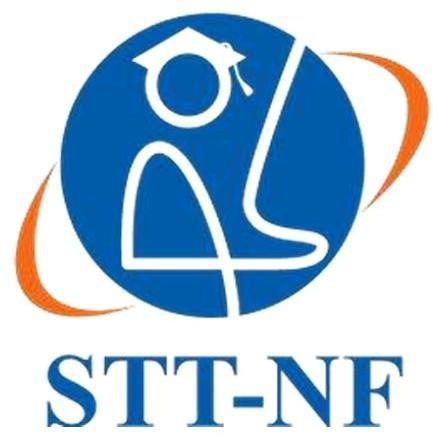
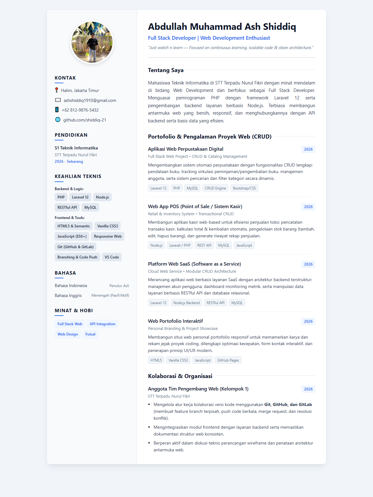

Desain web merupakan perpaduan antara aspek estetika visual dan fungsionalitas teknologi informasi. Sesuai materi Desain Web (P05), faktor penentu kualitas estetika web mencakup keselarasan warna (Colourfulness), kesederhanaan tata letak yang bermakna (Simplicity), variasi visual yang proporsional (Diversity), serta kualitas pengerjaan dan kerapian kode (Craftsmanship).
Elemen dasar desain web terdiri dari titik (point), garis (line), bentuk (shape), ruang (space), nilai terang-gelap (value), dan tekstur. Dalam desain modern, penerapan white space (negative space) sangat esensial untuk memberikan kenyamanan baca dan keteraturan informasi. Struktur halaman web profesional dibagi ke dalam komponen utama seperti Header, Navigation/Sidebar, Content Area, dan Footer.
HTML5 menyediakan tag-tag semantik seperti <header>, <aside>, <main>, <section>, dan <footer> yang memberikan arti struktural bagi browser maupun mesin pencari. Penggunaan Vanilla CSS dengan teknik modern seperti CSS Grid dan Flexbox memungkinkan penyusunan tata letak dua kolom yang adaptif pada berbagai ukuran layar serta ramah cetak (print-friendly) tanpa memerlukan framework eksternal.

Praktikum ini berhasil mengimplementasikan prinsip-prinsip desain web modern ke dalam bentuk halaman web Curriculum Vitae (CV) interaktif menggunakan kombinasi murni HTML5 dan Vanilla CSS. Dengan menerapkan tata letak dua kolom yang terstruktur, hierarki tipografi yang konsisten, dan kontras warna yang profesional, halaman CV dapat menyajikan informasi secara efektif, estetis, responsif, dan siap dicetak secara rapi.
Selain itu, penerapan manajemen kode berbasis Git bersama GitHub dan GitLab mendukung alur pengembangan yang terorganisir, aman, dan mudah dipelihara.